Para Minha Princesa - Sophia Borba
Role para continuar
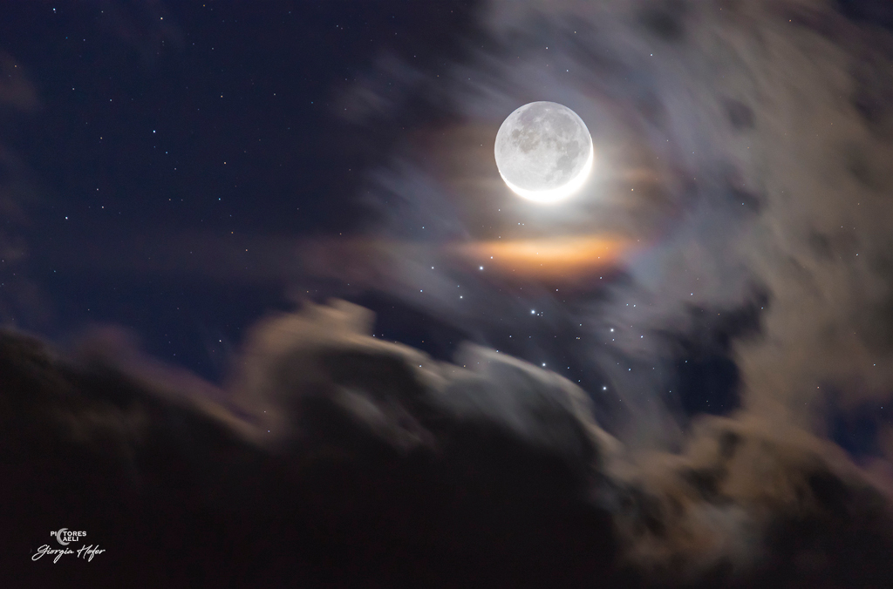
Depois de tudo que aconteceu, voltamos a conversar. A sua presença é a resposta sincera e perfeita de todas as minhas orações. E este era o céu naquela noite.
"Porque sou eu que conheço os planos que tenho para vocês, diz o Senhor, planos de fazê-los prosperar e não de causar dano, planos de dar a vocês esperança e um futuro."
Amor nem sei por onde começar, mas sei que você é a minha maior certeza .
Um amor puro demonstrado por você que me ensinou o quão lindo esse sentimento verdadeiramente é, você deu sentido pra um garoto que nunca imaginou encontrar a solução dos seus sentimentos, e o amor é simplesmente algo inexplicavel, é maravilhoso, é leve, e se eu tivesse infinitas oportunidades de vencer tudo o que minha mente dizia que era impossível, todas essas vezes eu escolheria você como meu primeiro amor.
Amor existem coisas que eu nunca sequer imaginei que conseguiria viver, é como se tudo ficasse preso dentro de mim, e você sempre esteve comigo em todos os momentos, mesmo nem quando eu mesmo acreditava que haveria saída para mim. E esse é um dos meus porques!💙
Amo cada detalhe seu, seu sorriso, seu jeitinho sincero de se expressar, suas brincadeiras engraçadas, o jeitinho "genra" (envergonhadinha), e o jeitinho amor da minha vida que tem as ideias mais criativas possíveis, amo seu jeito fofo, carinhosa, que se preocupa, que sempre da o maximo pra me ver feliz, eu amo te amar meu amor, amo nossas brincadeiras, amo me divertir com voce jogando joguinhos, amo quando nós formamos uma ótima dupla, amo compartilhar minhas conquistas com voce, amo viver meus dias ao seu lado, amo tambem seu jeitinho estressada, amo tudo, cada detalhe perfeito, cada imperfeição perfeita, te amar é o maior privilégio que Jesus poderia me dar.
Sabe muitas vezes ouvi falar que ele une propósitos, e hoje eu enxergo, que Ele sabia exatamente o que estava fazendo quando uniu os nossos caminhos, colocando a garota mais bela, amorosa, carinhosa, meiga, dengosa, e ele tinha certeza que era essa princesinha, que iria me salvar. E nunca houve e nunca haverá uma garota tao perfeita como voce para me ensinar diariamente, oque é o amor verdadeiro.
Amor você tem o meu coração por inteiro.
Não consigo mencionar em palavras, o quanto você me ajudou e o quanto vc me ajuda todos os dias, me salvando de mim mesmo, quando to cansado e tudo que preciso é ver você, quando nem eu acredito em mim mas você continua lá me motivando a conseguir. Você é a minha força amor, que me ensina diversas lições, e ensinou muito durante a nossa trajetória, a cada dia que se passa, eu te amo mais.
Minha mulher, eu quero poder passar o restante dos meus dias ao seu lado, você é a garota mais forte quer eu conheço, você é meu porto seguro amor, meu lugar em que eu sei que posso descansar, sem ter medo de ser eu mesmo, porque você sempre me apoiou e me ajudou mesmo sabendo das minhas dificuldades, dentre todos os milhões de porques, eu só encontro motivos para estar com você.
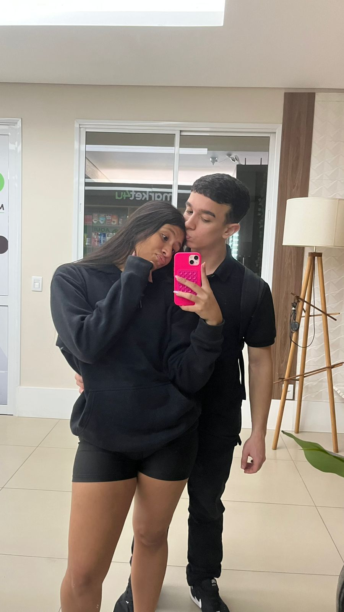
Momentos que se tornaram parte da nossa história.
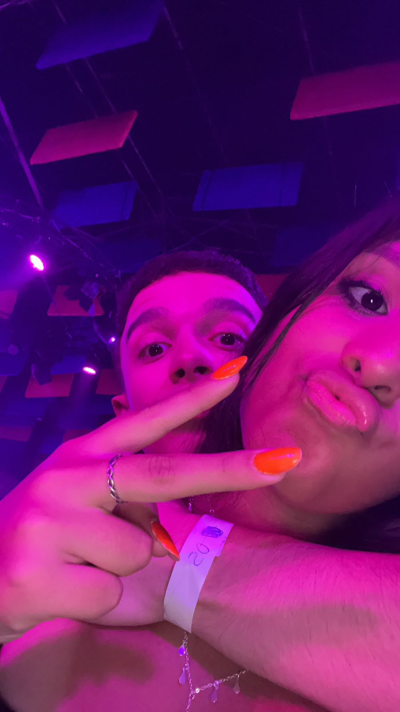
Primeiro beijão depois que voltamos 💙
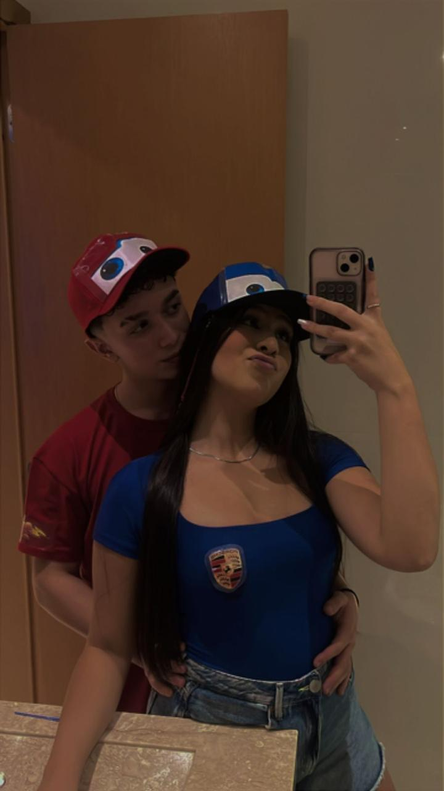
Nosso primeiro Halowen.
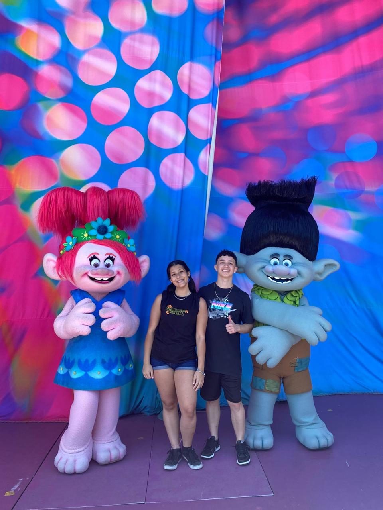
Nossa primeira viagem juntos.
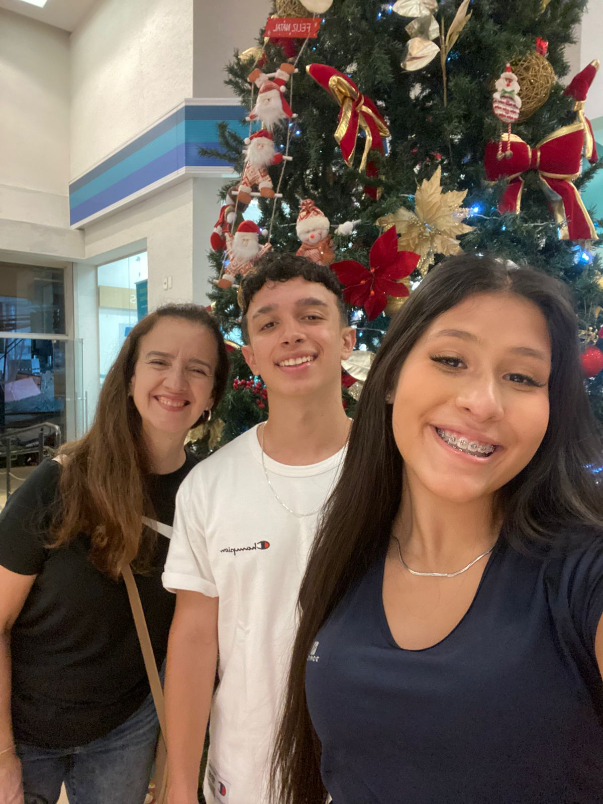
Mulheres da minha vida.
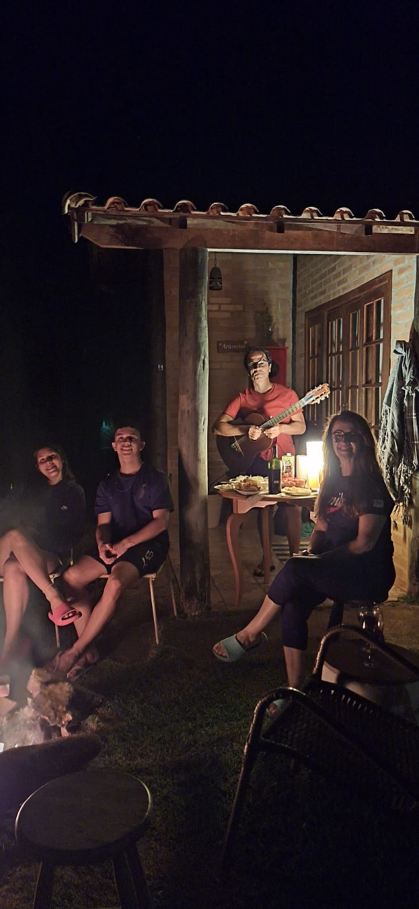
Nossa viagem em familia.
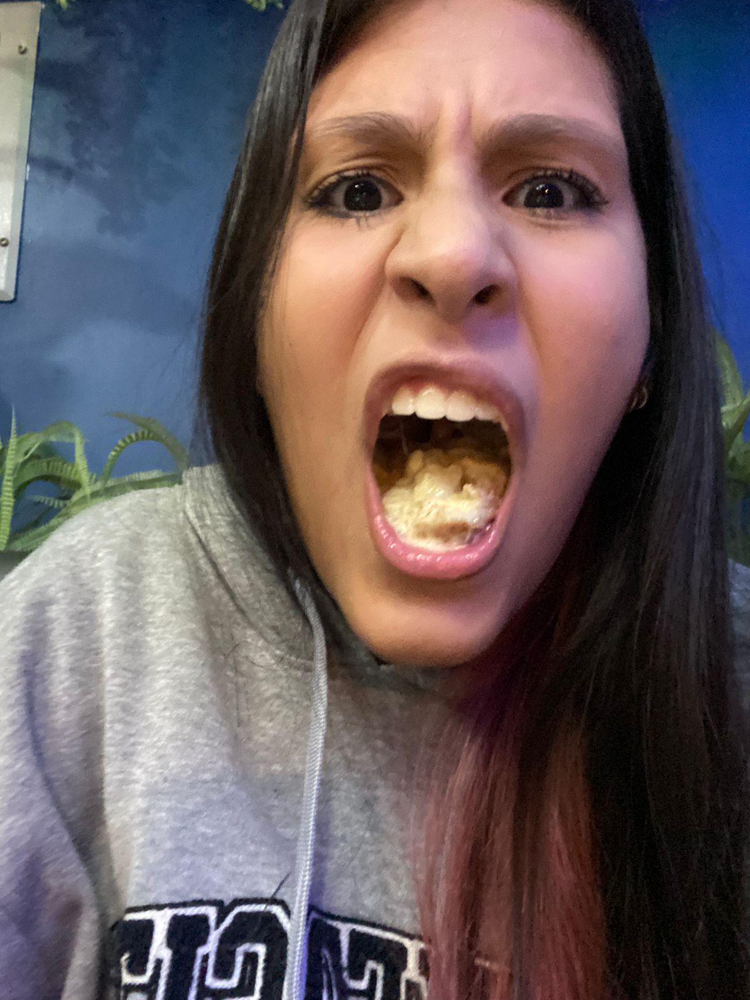
Voce comendo sushi gostoso.
Escolher a mesma pessoa todos os dias. Nos dias fáceis. Nos dias difíceis. E principalmente nos dias em que o amor deixa de ser sentimento e passa a ser decisão.
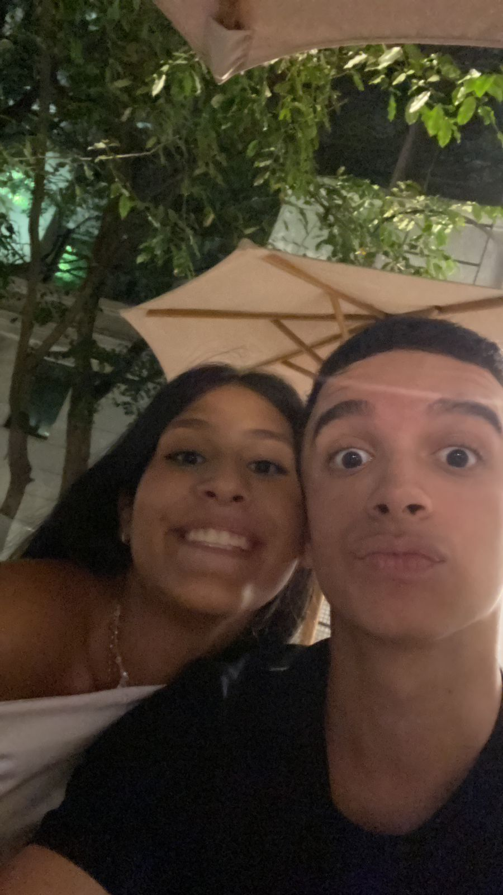
De uma forma impossível de explicar apenas com palavras. Assim é o que sinto quando olho para você e percebo o quanto Deus foi bom comigo.
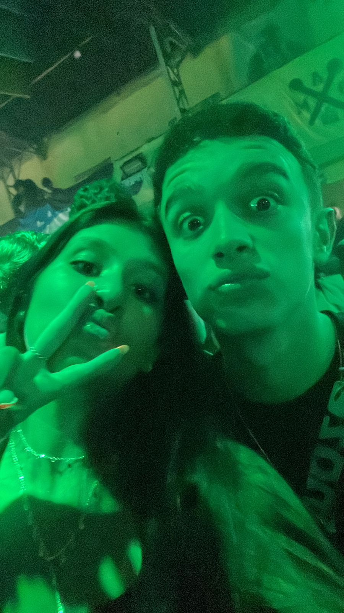
Não encontrada apenas em um sorriso bonito. Mas em um coração gentil, em um abraço sincero, e na forma como você cuida das pessoas que ama.
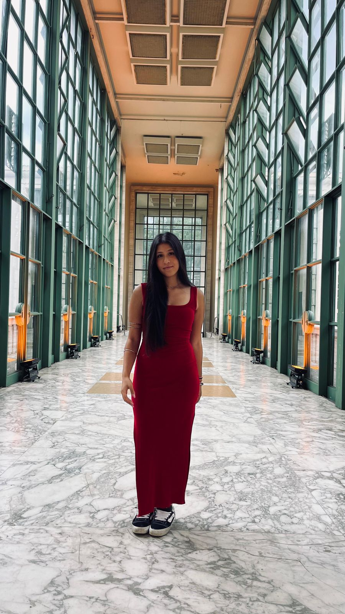
Garota que transformou um garoto perdido em alguém que voltou a acreditar em si mesmo e no amor verdadeiro. Sinônimo: Sophia Borba.
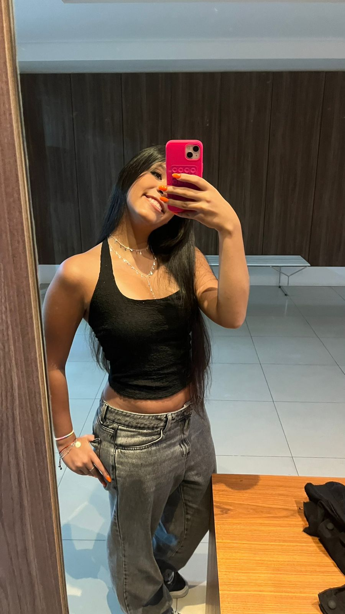
E eu espero preencher cada um deles ao seu lado.
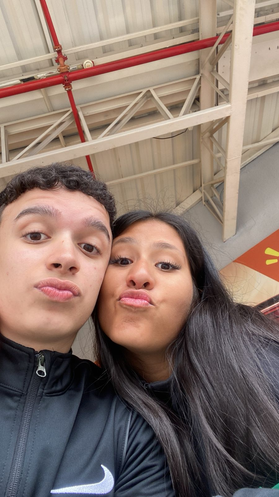
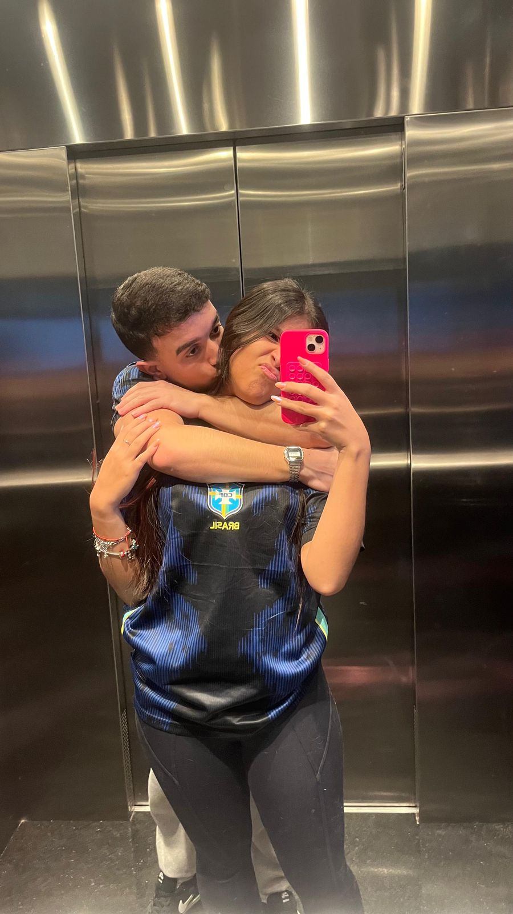
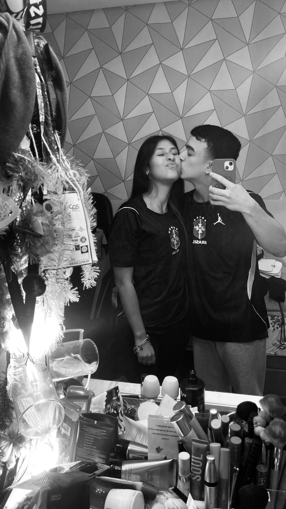
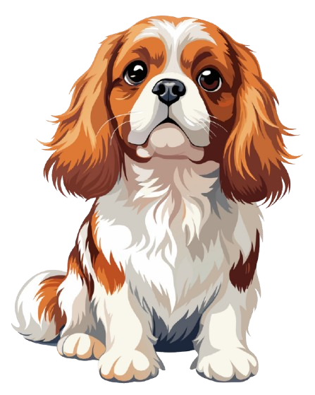
E a cada dia eu encontro mais motivos para escolher você.